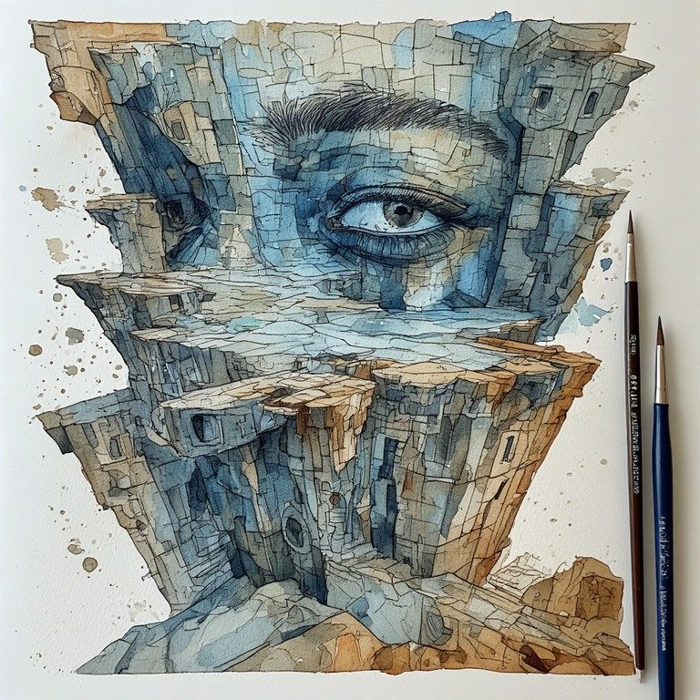
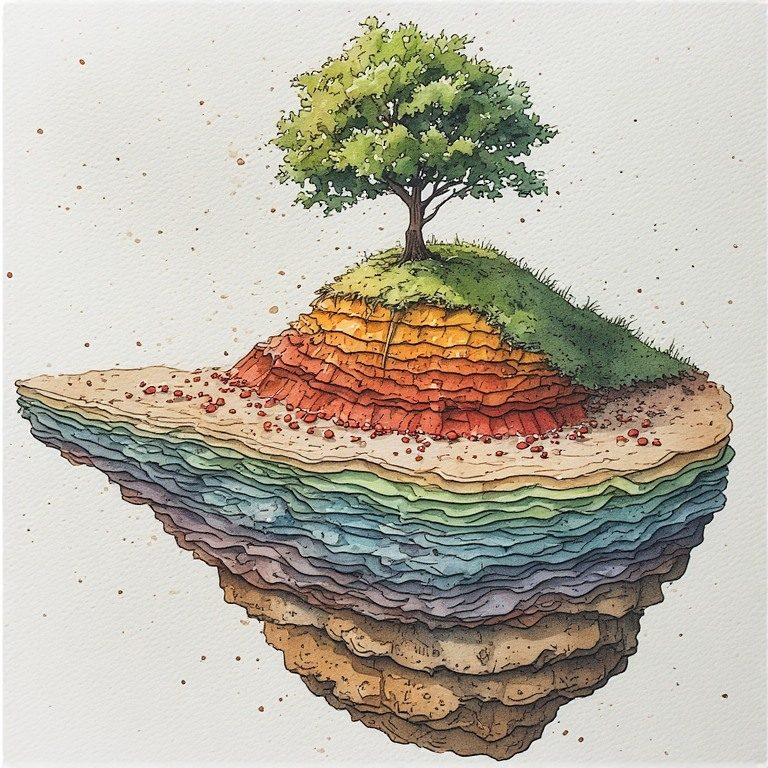

Part One: The Ten Ideas
← How to Use This Workbook · Radical Immanence Collection · Part Two: Common Questions →
These ten ideas are not steps. They are not a ladder. They circle each other, support each other, and sometimes contradict each other in ways that are honest. Read them slowly. Read them again in a different order. Let them sit.
1. Not One Self
You are not a single, stable person moving through time. You are multiple, shifting, and that is not a problem to fix. It is just what being alive actually is. Anyone demanding you be one consistent self is asking for something that does not exist.
Where do you feel your own multiplicity most right now?
What we call reality is a shared agreement, not a given truth. That does not make it less real in practice, but it does mean someone built it, and it is worth asking who benefits from the version we have agreed on. Calling the dominant construction just the way things are is where things go wrong.
What part of the agreed-upon reality are you most suspicious of?
The popular idea that grief has stages and eventually resolves is a comforting lie. Grief is the permanent condition of caring about things in a world where nothing stays. It does not get processed. It builds up. This is true personally and collectively. Old losses do not disappear when we acknowledge them. They accumulate.
What grief are you carrying that has not been named?
4. Witnessing Is The Core Ethical Act
When you cannot fix a contradiction, you can still stay present with it. That is what a witness does: stays in the room without flinching and without rushing to a conclusion. This is not passivity. It is the hardest thing the philosophy asks of you. Your presence changes what is happening. Genuine attention is a form of love.
Where in your life are you most needed as a witness right now?

5. Build Anyway, Knowing It's Temporary
You build structures, ideas, relationships, projects, knowing they have no solid foundation and will need to be rebuilt. That is not a failure. It is the only honest way to work. What you build teaches you something, and you use that to build again. The self is not a fixed thing. It is an ongoing process.
What are you building right now, knowing it is provisional?
Incompletion is not failure. Demanding that everything be finished and resolved is a kind of violence against how experience actually works. A philosophy that only counts finished things as valid describes a world that does not exist. The honest structure has revision built into it from the start.
What unfinished thing in you is actually just honest?
7. The Margins Reveal the Truth
The people who do not fit neatly into social categories are not exceptions or problems. They are evidence, the places where you can see the seams in how society is constructed. Real community holds difference without erasing it. Movements that demand everyone become the same kind of person destroy the very plurality that makes meaning possible.
Where do you not fit the available categories? What does that reveal?

Time does not move in a straight line where the past recedes behind you. It accumulates, layer by layer, pressing down on the present. Historical injustice is not a past event. It is a geological fact about the current landscape. You cannot build fairly on ground you are pretending is neutral.
What past weight is pressing into your present right now?
9. Language Shapes What's Possible
Language is not just a tool for describing reality. It is part of how reality gets built. Standard grammar assumes the world is made of stable things, which is a false picture of a world that is actually full of processes. People whose lives do not fit the standard nouns of political language are not underrepresented. They are grammatically erased. Anyone who claims to speak from nowhere is always speaking from somewhere specific, and naming that location is an obligation.
What in your life does not have adequate language yet?
You do not need a god or a beyond to have meaning. The ordinary world, attended to with full and honest attention, is where the sacred lives. Meaning is not guaranteed by anything outside. It is made here, by plural people building provisional things, knowing they are provisional. That is a harder account of meaning than religion offers, and a more honest one.
Where did you encounter the sacred today, without calling it that?